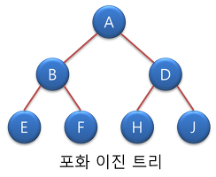
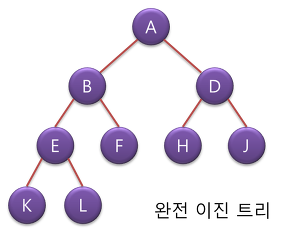
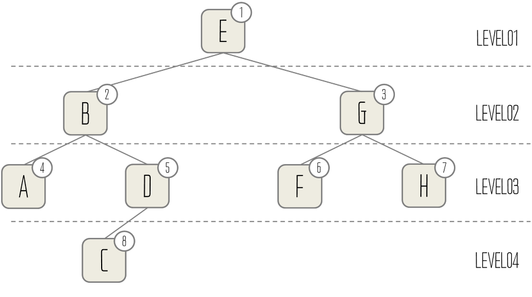

트리 (Tree)
자료구조상의 트리 는 다음과 같은 특성을 가진다.
- 트리는 하나의 루트 노드를 가진다.
- 트리는 0개 이상의 자식 노드를 갖고 있다.
- 그 자식노드 또한 0개 이상의 자식 노드를 갖고 있으며, 이를 반복적으로 정의한다.
트리는 비 순환 그래프의 한 종류 이다.
트리의 종류
포화 이진 트리 (Full Binary Tree)

트리의 모든 노드의 깊이가 같은 완전한 이진 트리를 말한다.
완전 이진 트리 (Complete Binary Tree)

노드의 마지막 부분 (끝 부분) 을 제외하고는 모든 자식 노드를 2개를 가진 이진 트리를 말한다.
이진 트리 (Binary Tree)
트리중에서도 각 노드의 자식노드가 최대 2개 를 갖고 있는 트리를 말한다.
트리의 순회 (탐색)
트리의 순회 방식은 대표적으로 다음 4가지 (전위, 중위, 후위, 레벨) 로 나뉜다.
전위 순회 (Pre-order traversal)
- 루트를 방문한다.
- 왼쪽 노드를 방문한다.
- 오른쪽 노드를 방문한다.
루트 노드가 맨 처음 나온다.
static void preOrder(Node n) {
if (n != null) {
System.out.println(n.getData() + " ");
preOrder(n.getLeft());
preOrder(n.getRight());
}
}
중위 순회 (In-order traversal)
- 왼쪽 노드를 방문한다.
- 루트를 방문한다.
- 오른쪽 노드를 방문한다.
static void inOrder(Node n) {
if (n != null) {
inOrder(n.getLeft());
System.out.println(n.getData() + " ");
inOrder(n.getRight());
}
}
후위 순회 (Post-order traversal)
- 왼쪽 노드를 방문한다.
- 오른쪽 노드를 방문한다.
- 루트를 방문한다.
static void postOrder(Node n) {
if (n != null) {
postOrder(n.getLeft());
postOrder(n.getRight());
System.out.println(n.getData() + " ");
}
}
레벨 순회 (Level-order traversal)
한 레벨의 모든 노드를 방문하고 다음 레벨 방문하는 방식으로
레벨은 왼쪽에서 오른쪽으로 방문한다.

- 방문순서 : E > B > G > A > D > F > H > C
참고자료
https://gmlwjd9405.github.io/2018/08/12/data-structure-tree.html
https://secmem.tistory.com/204